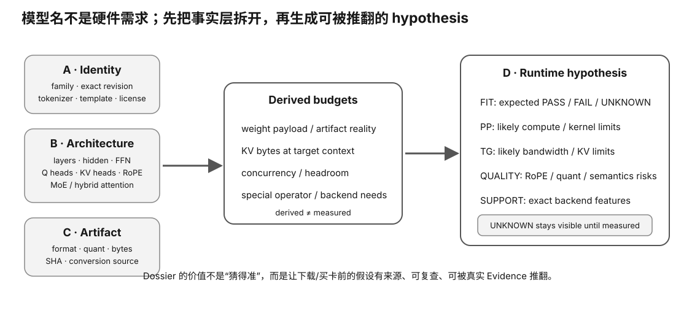

Model Dossier · L0
拿到陌生模型先别下载：从 config 建立硬件假设
“这是 32B，所以要多少显存？”只是很粗的第一问。真正会选模型的人，会先读 architecture/config，把 dense/MoE、layers、hidden、intermediate、attention/KV heads、context、vocab、tie、dtype 等信息转换成权重、KV、计算和 runtime 风险假设。
Prerequisite Check
你应理解 decoder-only、GQA/MQA、SwiGLU FFN、MoE 的 total/resident/active 区别。
真实问题：为什么同样叫“30B 左右”的模型，显存、KV 与 token/s 可以差很多？
因为参数总数没有告诉你参数放在哪里、KV heads 有多少、每层宽度怎样、是否 MoE、context 多长，也没告诉你目标量化与 runtime kernel。
1. 建 Dossier 的四层
A. Identity model family / exact revision / tokenizer / license B. Architecture layers / hidden / FFN / attention / KV / MoE / context C. Artifact format / quant / bytes / SHA / conversion source D. Runtime hypothesis fit / KV / likely bottleneck / backend support / unknowns
先写事实，再写推论；事实和假设不要混在同一栏。

2. Identity：名字不是 revision
同一个模型名可能有 base/instruct、不同 revision、重新量化、社区 conversion。至少记录：
- 原始模型仓库/官方标识；
- base vs instruct；
- source revision/commit（能确认时）；
- tokenizer/chat template；
- 转换/量化来源；
- 本地 artifact SHA。
否则以后质量差异可能只是“拿错模型”。
3. Dense architecture：先读这些字段
| 字段 | 主要影响 |
|---|---|
| num_hidden_layers | 每 token 重复 block 次数、KV 层数 |
| hidden_size | attention/FFN 矩阵宽度 |
| intermediate_size | FFN 参数与计算 |
| num_attention_heads | Q 结构/并行组织 |
| num_key_value_heads | KV cache 大小与 decode traffic |
| vocab_size | embedding/output projection |
| max/context + rope | 合法 context 与位置语义 |
4. 参数量粗算：不是为了取代官方数字
你可以用结构粗算来检查“这个 config 是否看起来合理”，例如 dense SwiGLU 每层 FFN 约 3HI；attention 投影按 Q/K/V/O shape 估算；再乘层数并加 embedding。
用途是理解参数分布和发现异常，不是追求一位不差复算模型总参数。
5. Artifact bytes：比参数量更接近真实 fit
本地部署最终加载的是具体 artifact。记录文件实际 bytes 与 SHA，优先用它做权重驻留预算，再加 KV/runtime。
ideal bytes ≈ params × bits/8 actual artifact bytes = filesystem reality
两者会因 quant block metadata、混合 tensor dtype、alignment 等不同。
6. KV 预算：从 config 推，不从模型 B 数猜
KV ≈ 2 × layers × context × kv_heads × head_dim × bytes × sequences
如果模型使用 sliding/hybrid/latent KV，公式要按实际架构调整；先标 UNKNOWN，后续专课再推。
7. MoE Dossier 多三列
- number of experts / shared experts；
- top-k active experts；
- total vs active parameter statement。
显存预算看 resident/total artifact；per-token compute 假设看 active 路由。不要只抄模型卡里最吸引人的“active B”。
Worked Example：陌生 32B 模型下载前 5 分钟
- 确认官方/可信 model card 和 exact revision；
- 读 config：layers/H/I/Q heads/KV heads/context/MoE；
- 找目标 GGUF/MLX 等 artifact 实际大小；
- 按目标 context 做 KV rough budget；
- 加 runtime/safety margin；
- 检查目标 backend 当前是否支持该 architecture/quant；
- 写 hypothesis：fit? PP/TG 谁可能受限？哪些 unknown 需实验？
到这里你才决定值不值得下载/转换/测试。
8. Hypothesis 应写成可被推翻的句子
坏写法：“这模型应该很快。”好写法：
On a 24 GB GPU, Q4 artifact + 16k KV is expected to fit with limited headroom; decode may be bandwidth-sensitive; actual support for attention variant is UNKNOWN until backend check.
这样后续 experiment 能验证/推翻每一项。
Why it matters
- 减少下载几十 GB 后才发现不 fit 的浪费。
- 让模型参数量从营销标签变成结构可解释对象。
- 提前发现 KV/MoE/新 attention 的隐藏成本。
- 把“事实、假设、unknown”分开，方便后续实验。
常见误区
- “B 数相同就硬件需求相同”——结构与 artifact 不同。
- “模型 card 写 128k，就按 128k 买显存”——还需质量语义和 KV 实际结构。
- “文件名 Q4 就足够建立 provenance”——要 exact artifact/hash/source。
- “active params 就是显存 params”——MoE 错误。
- “config 字段一定跨模型同义”——新架构可能定义不同。
小实验
任选两个不同 family 模型，创建 Dossier。每个字段标记 FACT / DERIVED / HYPOTHESIS / UNKNOWN。在不跑模型前写出 fit 与瓶颈预测。
预期观察：你会发现 config 足以排除很多候选，但不能替代 runtime support 与真实 measurement。
无 GPU 路径
这本来就是 L0 research lesson。无需下载完整权重，config/model card 足够完成第一版。
排错
- config 与 model card 冲突：优先 exact revision 的机器可读 config + 官方说明，记录冲突。
- artifact 大小异常：查是否 split、是否包含多文件、是否混合 precision。
- KV 公式不适用：标 unknown，查 architecture implementation，不强套 MHA。
Retrieval Practice
- Model Dossier 的四层是什么？
- 为什么 artifact bytes 比参数×位宽更接近真实权重 fit？
- KV 预算至少需要哪些 config 字段？
- MoE Dossier 为什么必须区分 total/active？
- FACT、DERIVED、HYPOTHESIS、UNKNOWN 为什么要分开？
- 给一个可被实验推翻的硬件 hypothesis 示例。
Decision Rule
下载/购买硬件前先建立 Model Dossier。没有 exact identity、artifact、attention/KV 结构和 backend support 的模型，只能进入探索队列，不能直接进入硬件采购结论。
Transfer
未来遇到任何新 architecture，把新字段加进 Dossier，而不是重写思考方式：identity → architecture → artifact → runtime hypothesis。
下载前的 Dossier 最低交付模板
Identity - canonical model: - exact revision: - tokenizer/template: Architecture FACTS - dense / MoE: - layers: - hidden / intermediate: - Q heads / KV heads / head dim: - context / position scheme: - special attention/cache: Artifact - target format/quant: - expected bytes: - exact local SHA: PENDING until downloaded Derived budgets - weight estimate: - KV estimate at target context: - safety/headroom assumption: Runtime - target backend: - documented support: - unknown kernel/features: Hypotheses - fit: - PP bottleneck: - TG bottleneck: - quality risks: UNKNOWN / must measure - ...
Worked Example：什么时候应该“先不下载”？
如果 config 已经显示目标 artifact + KV 的保守预算明显超过你的可用 accelerator/host memory，或者目标 runtime 对新 attention architecture 仍无明确实现证据，那么最好的工程动作可能是先停：改选更小 quant/context/model，或先调查 backend。下载几十 GB 并不会增加事实。
事实、推导、假设必须能追来源
| 标签 | 例子 | 来源 |
|---|---|---|
| FACT | num_key_value_heads = N | exact config/source |
| DERIVED | 传统 KV rough budget | FACT + 明确公式 |
| HYPOTHESIS | decode 可能 bandwidth-sensitive | 结构 + roof reasoning |
| UNKNOWN | 目标 backend 是否有 native kernel | 等待 source/experiment |
如果无法指出某一行属于哪类，就说明 Dossier 正把猜测伪装成事实。
Experiment Handoff
Dossier 的终点不是“我懂这个模型”，而是生成下一步最小实验：
unknown → smallest discriminating experiment → evidence to save → pass / blocked interpretation
例如 UNKNOWN = exact quant 是否 full GPU offload；最小实验就应是固定 tiny/target artifact 的 backend preflight，而不是先跑一大套性能 benchmark。
No-hardware Transfer
本节可对未来任意新模型重复。只要 model config/source 可读，你就能在没有完整权重、没有 GPU 的情况下先完成大部分 Dossier，并把真正需要硬件的项目留成 UNKNOWN。
What this lesson does NOT prove
Dossier 是调查与假设工具，不是 benchmark。即使所有纸面预算都漂亮，也不能证明 runtime 兼容、质量可接受或真实 PP/TG 达标；这些必须由后续 Evidence 关闭。
完成证据
完成本课后，保留一份 learner-owned completion artifact，至少包含：
- 用自己的话画出或写出本节最小 mental model，并标出关键变量/资源层；
- 完成本节小实验、worksheet 或无硬件 fallback；有真机时链接 raw Evidence，没有真机时明确标 L0 / DOCUMENTED / DEFERRED-HARDWARE；
- 写一条绑定 Evidence 的 PASS / FAIL / UNKNOWN / BLOCKED 结论，说明它怎样影响本地 LLM 的容量、性能、兼容、成本或风险判断；
- 写一句明确 non-claim：这份证据还不能证明什么。
只写“看完了”或抄规格表不算完成。课程要的是可复查的推理产物，而不是阅读打卡。